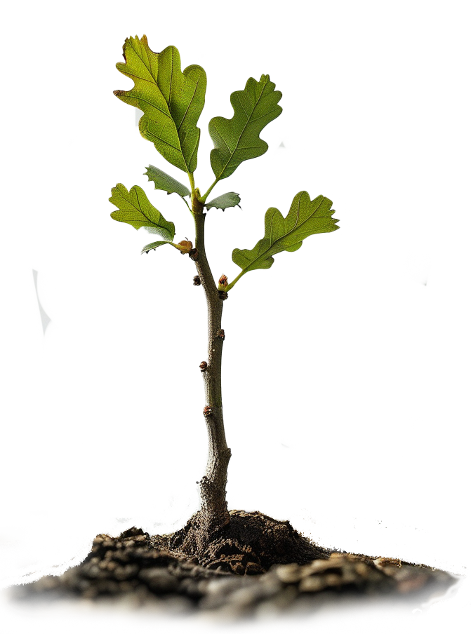
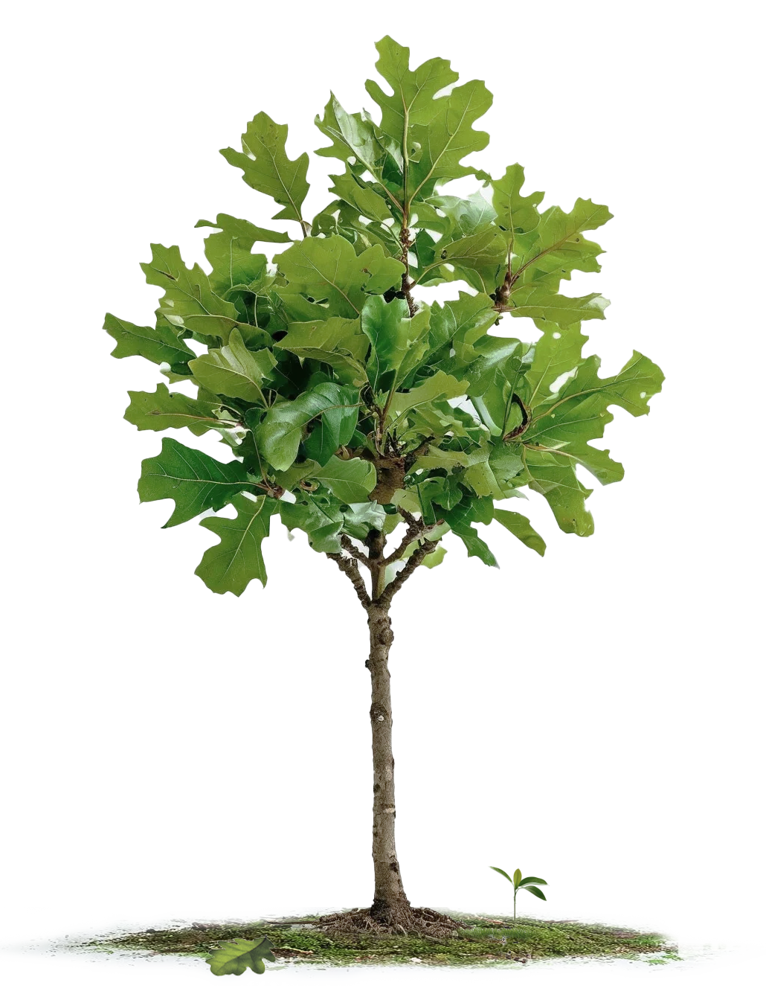
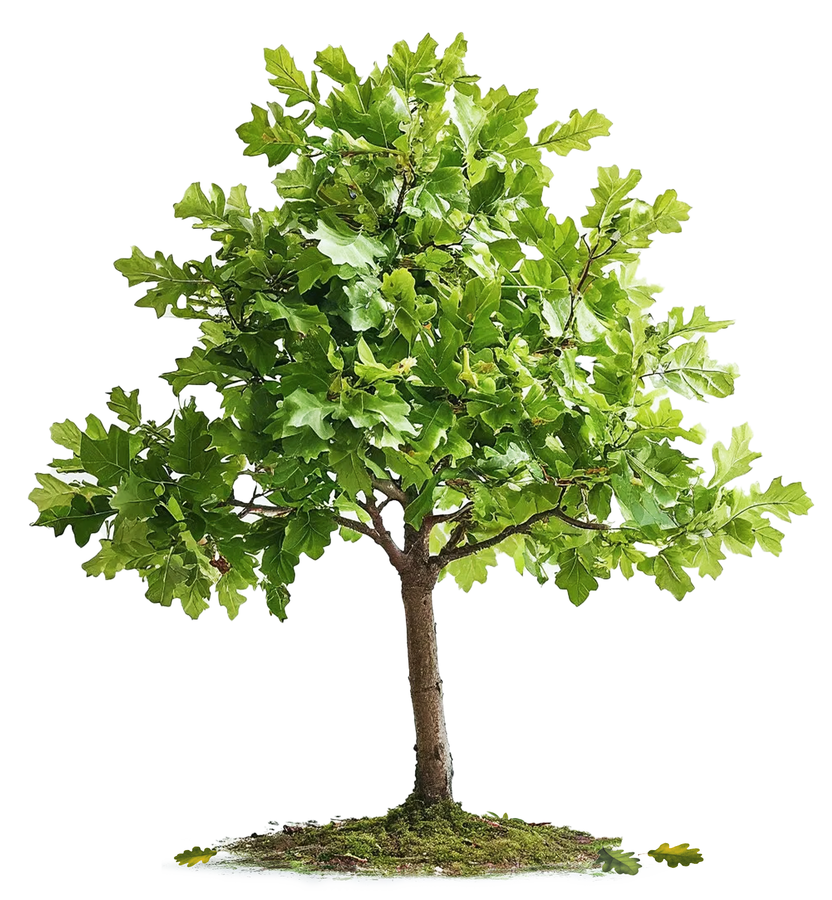
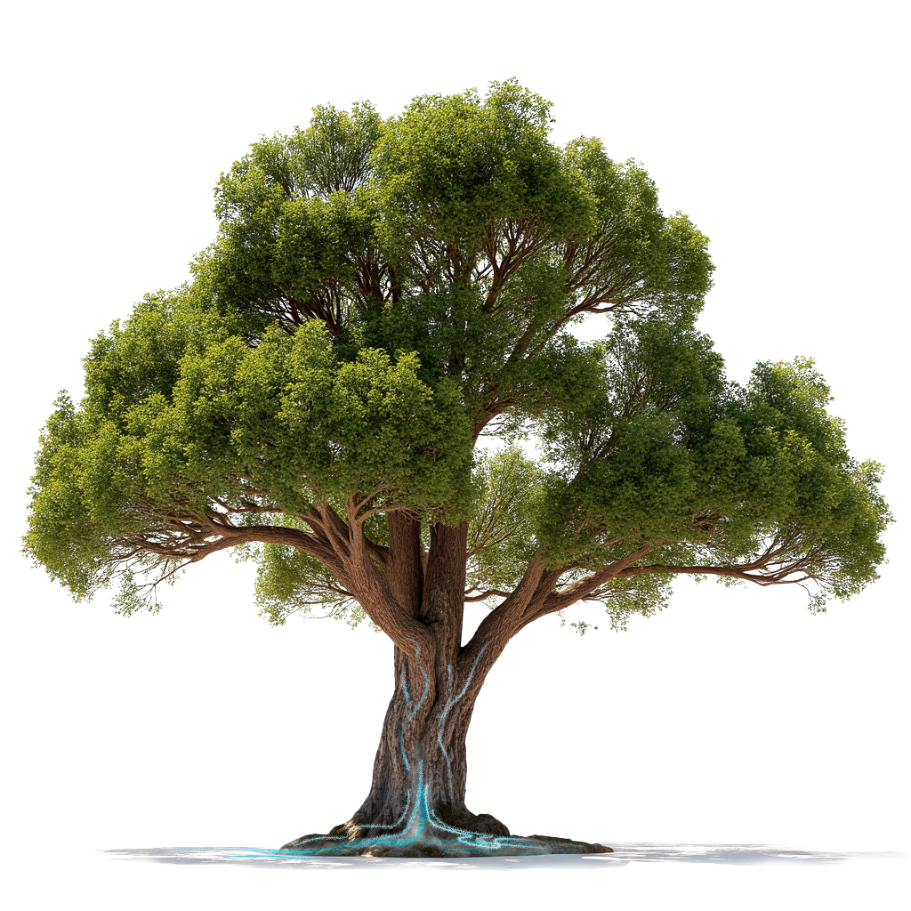

Исследование
UKPDS
The United Kingdom Prospective Diabetes Study
Британское Проспективное исследование сахарного
диабета
42
года
изучения
сахарного диабета
сахарного диабета
42-летнее наблюдение UKPDS подчеркивает
необходимость раннего строгого контроля гликемии сразу после постановки диагноза
сахарного диабета 2 типа,
особенно при приеме метформина, для снижения пожизненного риска осложнений
и смерти, связанных с диабетом 2 типа



